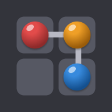

Privacy Policy
Last updated: September 24, 2026
Русская версия ↓This policy explains what data Beadline: Color Logic Puzzle (“the game”), made by Romz Studio (“we”), collects, why, who it is shared with, how long it is kept, and how to delete it. Questions: romzstudio@gmail.com.
1. Data stored only on your device
Your settings (sound, vibration, language, timer, reminders), local puzzle progress, hint balance and statistics are kept in a save file on your phone. It never leaves the device except as described below, and it is removed when you uninstall the game.
2. Data we collect on our server
Our backend is hosted by Supabase. The first time the game goes online it creates an anonymous account for you — no name, email or phone number is needed.
| Data | Why |
|---|---|
| Anonymous player ID (Supabase account ID, account creation and sign-in times) | To link your results and progress to you, and to restore them on reinstall. |
| Nickname — random at first, you can change it | Shown publicly on the daily leaderboard. |
| Country — determined once from your IP address when your account is created (we do not store the IP address itself); you can change or hide it in Settings | Shown next to your nickname on the leaderboard and used for the country leaderboard. |
| Daily puzzle results: solve time, hints used, the path you drew, when you started | Ranking you on the leaderboard and checking that a result is genuine. |
| Progress: stars and best times for collection levels, unlocked achievements | Restoring your progress on another device or after reinstalling. |
| Level statistics: time, hints and undo count for each solved collection level | Tuning puzzle difficulty. |
| Rewarded-ad records: the ad network’s transaction ID, where the ad was shown, the reward | Granting the in-game reward for a watched ad and preventing abuse. |
| Reminder data: push notification token, language, time zone (UTC offset), the hour you usually solve the daily puzzle, your current streak, whether reminders are on, date of the last reminder | Sending at most one daily-puzzle reminder a day, at a time that suits you, in your language — only if you turned reminders on. |
| Email address and Google account ID — only if you choose to sign in with Google | Stored by our authentication service (Supabase Auth) to link your progress to your Google account so you can restore it. Not shown to other players. |
Like any web service, Supabase also keeps short-lived technical request logs (including IP addresses) for security and operations.
3. Google services in the game
Google AdMob (ads)
The game shows ads through Google AdMob. AdMob collects your device’s advertising ID, IP address (used for approximate location), device and app information, and ad interactions, to show and measure ads and prevent fraud. In the EU/EEA and UK you are asked for consent first (Google’s consent form); without consent you see non-personalized ads. See how Google uses data from apps.
Firebase Analytics (usage statistics)
We use Firebase Analytics to understand how the game is played: events such as starting and finishing a level, solving the daily puzzle, using hints, streak changes, settings changes and reminder opens, plus an app instance ID, device model, OS and app version, and approximate location (country/region) derived from your IP address. It is not linked to your nickname or player ID. Outside the EU/EEA and UK it is on by default; in the EU/EEA and UK analytics is turned off.
Firebase Cloud Messaging (reminders)
Push reminders are delivered by Firebase Cloud Messaging, which issues the push token and a Firebase installation ID for your device. Nothing is sent unless you enable reminders.
Google Sign-In (optional)
If you link a Google account, Google shares your email address and account ID with us for signing in.
Google Play (purchases)
In-app purchases are processed by Google Play. We only learn which products you own (for example “remove ads”); we never receive or store your payment details.
4. Who we share data with
- Google (AdMob, Firebase, Google Play, Google Sign-In) — as described above, under Google’s Privacy Policy.
- Supabase — hosts our database and account system, under Supabase’s Privacy Policy.
- Other players see only your nickname, country (unless hidden) and daily results on the leaderboard.
We do not sell your data. All data is sent over encrypted connections (HTTPS).
5. Your choices
- Ad consent (EU/EEA, UK): change or withdraw it any time in the game: Settings → Privacy options (ads). You can also reset or delete your advertising ID in your phone’s settings (Settings → Google → Ads, or Settings → Privacy → Ads, depending on the phone).
- Reminders: Settings → Notifications in the game, or your phone’s notification settings.
- Country on the leaderboard: Settings → show / choose your country.
- Nickname: change it in Settings at any time.
6. How to delete your data
In the game: Settings → Delete my data, or by email. Details on the data deletion page.
7. How long we keep data
- Account data (section 2) — for as long as your account exists, until you delete it.
- Reminder data — until you delete your account; a device that has not opened the game for 60 days gets no more reminders, and push tokens rejected by Firebase (for example after uninstalling) are deleted automatically.
- Firebase Analytics data — according to the Google Analytics retention setting, at most 14 months.
- Server request logs — a few days, per Supabase’s log retention.
- AdMob and Google Play data — according to Google’s own policies.
8. Children
The game is not directed at children under 13, and we do not knowingly collect personal information from children under 13. If you believe a child has provided us data, contact us and we will delete it.
9. Changes
We may update this policy. Changes are posted on this page with a new “Last updated” date.
10. Contact
Romz Studio — romzstudio@gmail.com
Политика конфиденциальности
Последнее обновление: 24 сентября 2026
Здесь описано, какие данные собирает игра Beadline: Color Logic Puzzle («игра») от Romz Studio («мы»), зачем, кому они передаются, сколько хранятся и как их удалить. Вопросы: romzstudio@gmail.com.
1. Данные только на вашем устройстве
Настройки (звук, вибрация, язык, таймер, напоминания), прогресс в задачах, запас подсказок и статистика хранятся в файле сохранения на телефоне. Они не покидают устройство, кроме случаев, описанных ниже, и удаляются вместе с игрой.
2. Данные, которые мы храним на сервере
Наш сервер работает на Supabase. Когда игра впервые выходит в интернет, она создаёт для вас анонимный аккаунт — имя, почта или телефон не нужны.
| Данные | Зачем |
|---|---|
| Анонимный ID игрока (ID аккаунта Supabase, время создания и входа) | Чтобы связать с вами результаты и прогресс и восстановить их после переустановки. |
| Ник — сначала случайный, его можно изменить | Показывается публично в таблице рекордов задачи дня. |
| Страна — определяется один раз по IP-адресу при создании аккаунта (сам IP мы не храним); её можно изменить или скрыть в настройках | Показывается рядом с ником в таблице рекордов и нужна для таблицы по странам. |
| Результаты задач дня: время, подсказки, нарисованный путь, время начала | Место в таблице рекордов и проверка, что результат честный. |
| Прогресс: звёзды и лучшее время по уровням коллекций, полученные достижения | Восстановление прогресса на другом устройстве или после переустановки. |
| Статистика уровней: время, подсказки и число отмен на каждом решённом уровне коллекций | Настройка сложности задач. |
| Записи о рекламе за награду: ID транзакции рекламной сети, место показа, награда | Выдача награды за просмотр и защита от злоупотреблений. |
| Данные для напоминаний: push-токен, язык, часовой пояс (смещение от UTC), час, в который вы обычно решаете задачу дня, текущая серия, включены ли напоминания, дата последнего напоминания | Не больше одного напоминания о задаче дня в сутки, в удобное время и на вашем языке — только если вы включили напоминания. |
| Адрес почты и ID аккаунта Google — только если вы входите через Google | Хранятся в системе входа (Supabase Auth), чтобы связать прогресс с аккаунтом Google и восстановить его. Другим игрокам не показываются. |
Как любой веб-сервис, Supabase также ведёт кратковременные технические журналы запросов (включая IP-адреса) для безопасности и работы сервиса.
3. Сервисы Google в игре
Google AdMob (реклама)
Реклама показывается через Google AdMob. AdMob собирает рекламный идентификатор устройства, IP-адрес (для примерного местоположения), сведения об устройстве и приложении и взаимодействия с рекламой — чтобы показывать и измерять рекламу и бороться с мошенничеством. В ЕС/ЕЭЗ и Великобритании сначала спрашивается согласие (форма Google); без согласия показывается неперсонализированная реклама. Подробнее: как Google использует данные из приложений.
Firebase Analytics (статистика использования)
Firebase Analytics помогает понять, как играют в игру: события вроде начала и прохождения уровня, решения задачи дня, использования подсказок, изменений серии и настроек, открытий напоминаний, а также ID экземпляра приложения, модель устройства, версия ОС и игры и примерное местоположение (страна/регион) по IP. Эти данные не связаны с вашим ником и ID игрока. Вне ЕС/ЕЭЗ и Великобритании аналитика включена по умолчанию; в ЕС/ЕЭЗ и Великобритании она выключена.
Firebase Cloud Messaging (напоминания)
Напоминания доставляет Firebase Cloud Messaging: он выдаёт push-токен и ID установки Firebase для устройства. Пока вы не включили напоминания, ничего не отправляется.
Вход через Google (по желанию)
Если вы привязываете аккаунт Google, Google передаёт нам адрес почты и ID аккаунта для входа.
Google Play (покупки)
Покупки в игре обрабатывает Google Play. Мы узнаём только, какие товары у вас есть (например, «без рекламы»); платёжные данные мы не получаем и не храним.
4. Кому передаются данные
- Google (AdMob, Firebase, Google Play, вход через Google) — как описано выше, по Политике конфиденциальности Google.
- Supabase — хостинг базы данных и системы аккаунтов, по политике Supabase.
- Другие игроки видят только ваш ник, страну (если не скрыта) и результаты задач дня в таблице рекордов.
Мы не продаём ваши данные. Все данные передаются по защищённому соединению (HTTPS).
5. Что вы можете настроить
- Согласие на рекламу (ЕС/ЕЭЗ, Великобритания): изменить или отозвать в любой момент в игре: Настройки → Настройки конфиденциальности (реклама). Рекламный ID можно сбросить или удалить в настройках телефона (Настройки → Google → Реклама или Настройки → Конфиденциальность → Реклама, в зависимости от телефона).
- Напоминания: Настройки → Уведомления в игре или настройки уведомлений телефона.
- Страна в таблице рекордов: Настройки → показать / выбрать страну.
- Ник: можно изменить в настройках в любой момент.
6. Как удалить данные
В игре: Настройки → Удалить мои данные, или письмом. Подробности — на странице удаления данных.
7. Сколько хранятся данные
- Данные аккаунта (раздел 2) — пока существует аккаунт, до его удаления.
- Данные для напоминаний — до удаления аккаунта; устройству, где игру не открывали 60 дней, напоминания больше не отправляются, а push-токены, которые Firebase отклоняет (например, после удаления игры), удаляются автоматически.
- Данные Firebase Analytics — по настройке хранения Google Analytics, не дольше 14 месяцев.
- Журналы запросов сервера — несколько дней, по правилам хранения журналов Supabase.
- Данные AdMob и Google Play — по правилам Google.
8. Дети
Игра не предназначена для детей младше 13 лет, и мы сознательно не собираем их персональные данные. Если вы считаете, что ребёнок передал нам данные, напишите нам, и мы их удалим.
9. Изменения
Мы можем обновлять эту политику. Изменения публикуются на этой странице с новой датой обновления.
10. Контакты
Romz Studio — romzstudio@gmail.com